flowchart TD
A["最初概率值 p(H)"] --> C["贝叶斯定理"]
B["数据 D"] --> C
C --> D["重新估价的概率值 p(H|D)"]
2 基本概念
2.1 概率的规则及贝叶斯定理
2.1.1 概率的规则
概率的频率派定义：某事件发生的概率，是重复试验次数趋于无穷时，该事件发生次数占总试验次数的比例。
以掷骰子为例，“掷出偶数”这个事件的概率可以写成：
\[ p(\text{掷出偶数}) = \frac{\text{掷出偶数的次数}}{\text{总试验次数}} \]
但是，频率派的概率定义，对某些问题完全不起作用，比如：
- 刘阿姨的女儿今年考上大学的概率是多少？
- 中国足球队下一次进入世界杯决赛的概率是多少？
- 下一次重大国际危机发生在亚洲的概率是多少？
这类问题，无法通过大量重复试验获得频率，人们只能用自己的相信程度（degree of belief）来描述——这种概率称为主观概率（subjective probability）。
频率派无法处理主观概率，但是，贝叶斯统计对两种概率都能自然处理。
贝叶斯统计用概率度量”你对一个不确定事件为真的相信程度”，这个度量基于你已有的知识。
- 设 \(H\) 是一个事件（或假设），\(K\) 是试验前你已有的知识，则 \(p(H \mid K)\) 表示：给定 \(K\)，你对 \(H\) 的相信程度
- 试验后得到数据 \(D\)，你需要把概率修订为 \(p(H \mid D \cap K)\), 表示：在 \(K\) 的基础上，结合新数据 \(D\)，你对 \(H\) 的相信程度。
- 这次修订取决于：在 \(H\) 为真、以及 \(H\) 为假两种情况下，\(D\) 出现的可能性分别有多大
对纯粹的贝叶斯派来说，所有概率都是条件概率——所以不必每次都特意写出”条件”二字。
例子：\(p(H \mid D \cap K)\) 怎么用
- \(H\)：假设这枚硬币是均匀的
- \(D\)：抛 10 次，7 次正面
- \(K\)：这枚硬币是朋友随手给我的，没有作弊动机
\[ p(H \mid D \cap K) \]
含义：在已知这枚硬币是朋友随手给的这个背景知识 \(K\) 的基础上，结合抛 10 次、7 次正面这个新数据 \(D\)，你对”这枚硬币是均匀的”这个假设 \(H\) 的相信程度。
如果把 \(K\) 换成”这枚硬币是魔术师给我的”，同样的数据 \(D\)，算出来的 \(p(H \mid D \cap K)\) 会不一样——这说明 \(K\) 不是摆设，它真实参与了运算。
概率论的正式规则有三条 , 所有其他的性质都可从它们导出.
- 凸性：对任何事件 \(A\) 和 \(B\) \[ 0 \leq p(A \mid B) \leq 1 \]
及
\[ p(A \mid A) = 1 \]
概率值必须落在一个”凸集”（这里就是闭区间 [0,1]）里，不能跑到区间外面去。
- 可加性：对于互斥事件 \(A\) 和 \(B\)，和任意事件 \(C\)，
\[ p(A \cup B \mid C) = p(A \mid C) + p(B \mid C) \]
（这条对任意可数的无穷集合也成立。）
A 和 B 互斥，A 或 B 发送的概率就是直接把两者的概率相加
- 乘法规则：
\[ p(A \cap B \mid C) = p(B \mid C)\, p(A \mid B \cap C) \]
读作：在已知 C 的条件下，A 和 B 同时发生的概率 = 在已知 C 的条件下，B 发生的概率 × 在已知 B 和 C 的条件下，A 发生的概率。（A和B顺序可替换）（可以变成除法）
这条是三条公理里最关键的一条——贝叶斯定理本质上就是从这条规则重新排列变形推出来的。 联合概率 = 一个先发生的概率 × 另一个在它基础上跟着发生的概率。
2.1.2 概率规则的合理性 、贝叶斯定理 、优势比 、后验分布
注意，由于 \(K\) 作为每一个条件事件的一部分，\(K\) 已经包含在基于先验知识的概率 \(p(H) \equiv p(H \mid K)\) 之中，所以任何以 \(H\) 为条件的概率都包含了 \(K\) 的信息。从这些规则可以证明贝叶斯定理：
\[ p(H \mid D) = \frac{p(D \mid H)\,p(H)}{p(D)} = \frac{p(D \mid H)\,p(H)}{p(D \mid H)\,p(H) + p(D \mid H^C)\,p(H^C)} \]
1分子：表示 H 成立（先验概率）且观察到 D 发生的概率 \(p(D \mid H)p(H) = p(D \cap H)\)
1分母：不管 H 是否成立，D 发生的概率
1 整体，这是一个比例，H 成立且发生D，占所有 D 中的多大份额
这就是 后验概率 $ p(H D) $ 的真实含义，用数据把不符合的可能行过滤掉，剩下的里面再看 \(H\) 占多少
思考题：为什么贝叶斯公式是乘法规则变体？
先把乘法规则原文摆出来
\[ p(A \cap B \mid C) = p(B \mid C)\, p(A \mid B \cap C) \]
代入 A=D，B=H
\[ p(D \cap H \mid C) = p(H \mid C)p(D \mid H \cap C) \]
如果我们把背景知识 C（也就是 K）先按下表（因为之前说过它一直隐藏在每个概率符号背后），这条式子写简化一点就是：
\[ p(D \cap H) = p(H)p(D \mid H) \]
这一步没有引入任何新规则，就是把”乘法规则”里的字母A、B 换成了具体的 D、H，纯粹是同一条规则的一次应用，不是巧合，也不是新东西。
这里 \(H^C\) 是 \(H\) 的互补事件。上式显示对事件 \(H\) 的信念 \(p(H)\) 是如何通过新的数据信息 \(D\) 转换到更新的信念 \(p(H\mid D)\) 的。贝叶斯关于概率的思维能够用下图说明：
为什么用概率适合研究不确定性？
- 参照一个标准：优势比
- 得分规则
- 决策分析
2.1.3 贝叶斯与经典统计学概念的比较
关于 \(\theta\)，也就是关于不确定性上，传统统计和贝叶斯统计就不一致了。按照我们的推理，它应仍然有一个称为先验概率的概率密度，比如记为 \(p(\theta)\)，它代表了得到数据之前所具有的知识的细节。这个特性在大多数统计方法中是没有的。由此，正如上面所解释的，推断能够从后验概率 \(p(\theta \mid x)\) 来着手，它描述给定数据 \(x\) 后 \(\theta\) 的不确定性，并且有计算关系
\[ p(\theta \mid x) = p(x \mid \theta)\,p(\theta) / p(x) \propto p(x \mid \theta)\,p(\theta) \]
\[ 后验 \propto 似然 \times 先验 \]
这里的比例常数能够由 \(p(\theta\mid x)\) 关于 \(\theta\) 的和（或积分）为 1 而得到。显然，上式是贝叶斯定理的另一种形式。
$ $： 正比于（proportional to）
意思是：左边和右边只相差一个常数倍数，因此省略那个常数
思考题：什么是似然（Likelihood）？
\(p(x\mid\theta)\) 这个表达式，在贝叶斯公式里被叫做”似然”，它和”概率”是什么关系？
就是同一个表达式 \(p(x\mid\theta)\)，换一个看待角度：
\[ L(\theta) = p(x\mid\theta) \]
| 名称 | 谁固定 | 谁变化 | 是什么 |
|---|---|---|---|
| 概率 \(p(x\mid\theta)\) | \(\theta\) 固定 | \(x\) 变化 | 关于 \(x\) 的概率分布，积分=1 |
| 似然 \(L(\theta)\) | \(x\) 固定（已经测到的数据） | \(\theta\) 变化 | 关于 \(\theta\) 的函数，不是概率分布，积分不等于1 |
上面公式为什么一样？
区别在于：你打算拿它去做积分的时候，是固定谁、对谁积分。
区别不在公式，也不在算出来的单个数值，而在于——你接下来打算怎么用这个函数、准备让哪个字母”动起来”去扫一遍所有可能取值：
当作”概率”用：你把 \(\theta=0.5\) 焊死不动，让 \(x\) 从 \(0\) 扫到 \(10\)（因为一次试验的 \(x\) 结果可能是0到10道里的任何一个），这时候你其实是在问——“\(\theta\) 已知是0.5的前提下，答对0道的概率、答对1道的概率……答对10道的概率，分别是多少”，这11个数字加起来会等于1。这个”扫描 \(x\)“的动作，对应的名字就叫概率分布。
当作”似然”用：你把 \(x=5\) 焊死不动（因为这就是你已经拿到手的、真实发生过的观测结果，不会再变了），让 \(\theta\) 从 \(0\) 连续扫到 \(1\)（因为你不知道真实的 \(\theta\) 是多少，想知道每个候选值有多大可能性），这时候你在问——“如果 \(\theta=0.1\)，出现’答对5道’这个结果有多可能；如果 \(\theta=0.5\)，出现’答对5道’这个结果有多可能……”，扫完 \(\theta\) 从0到1所有取值后加起来（积分），不等于1。这个”扫描 \(\theta\)“的动作，对应的名字就叫似然函数。
Code
library(ggplot2)
library(patchwork)
# 左图: 当作"概率"用 —— θ焊死=0.5, x从0扫到10
x_vals <- 0:10
prob_df <- data.frame(x = x_vals, prob = dbinom(x_vals, size = 10, prob = 0.5))
p1 <- ggplot(prob_df, aes(x = x, y = prob)) +
geom_col(fill = "#1D3557", width = 0.6) +
labs(title = "当作「概率」用：θ=0.5 焊死，扫描 x",
subtitle = paste0("11个数字加起来 = ", round(sum(prob_df$prob), 4)),
x = "x (答对题数)", y = "p(x | θ=0.5)") +
theme_minimal(base_size = 12)
# 右图: 当作"似然"用 —— x焊死=5, θ从0连续扫到1
theta_vals <- seq(0.001, 0.999, length.out = 300)
lik_df <- data.frame(theta = theta_vals, lik = dbinom(5, size = 10, prob = theta_vals))
integral_approx <- sum(lik_df$lik) * diff(theta_vals)[1]
p2 <- ggplot(lik_df, aes(x = theta, y = lik)) +
geom_line(color = "#B5432B", linewidth = 1) +
geom_area(fill = "#B5432B", alpha = 0.2) +
labs(title = "当作「似然」用：x=5 焊死，扫描 θ",
subtitle = paste0("对θ积分(数值近似) ≈ ", round(integral_approx, 4), " (≠1)"),
x = expression(theta), y = expression(L(theta)==p(x==5*"|"*theta))) +
theme_minimal(base_size = 12)
p1 | p2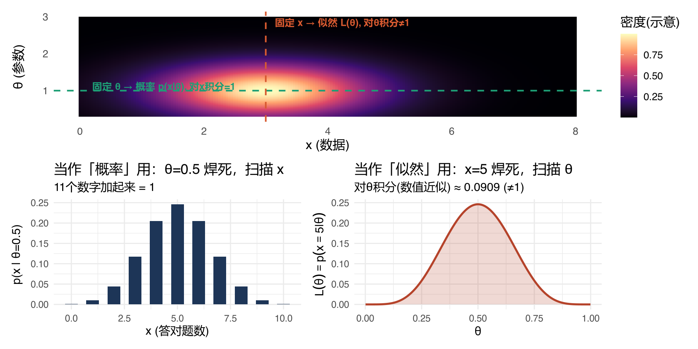
结合贝叶斯公式看：
\[ \underbrace{p(\theta\mid x)}_{\text{后验}} \propto \underbrace{p(x\mid\theta)}_{\text{似然}} \times \underbrace{p(\theta)}_{\text{先验}} \]
这一步的关键动作，是把 \(p(x\mid\theta)\) 从”\(x\) 的概率”重新解读成”\(\theta\) 的似然”——固定住已经观测到的数据 \(x\)，看不同的 \(\theta\) 取值会让这份数据出现的可能性有多大。似然越大，说明这个 \(\theta\) 越”支持”观测到的数据，后验就越偏向这个 \(\theta\)。
一句话理解：似然回答的是”如果 \(\theta\) 是这个值，我看到手上这份数据的可能性有多大”，不是”\(\theta\) 本身有多大概率”——后面这个问题才是后验 \(p(\theta\mid x)\) 要回答的。
什么是积分，为什么积分要等于1
积分最直观的理解就是：求一条曲线下面、和横轴之间围出来的面积。
为什么积分要等于1——因为这就是”概率”这个词的定义
回到最原始的地方：一个东西要配得上被叫做”概率分布”，必须满足一条铁律——所有可能结果发生的概率加起来，必须是100%（也就是1）。
置信区间问题
通过概率解决多余参数、重复观测问题
关于重复
似然原理
后验概率 $ p(x) $ 给出了 $ $ 的完全推断
贝叶斯统计证据度量与经典统计比较
（传统统计用 $ p$ 作为证据的度量）
| 序号 | 误解（Misconception） |
|---|---|
| 1 | 如果 \(P=.05\)，原假设为真的概率只有 5%。 |
| 2 | 不显著的差异（如 \(P\geq.05\)）意味着组间没有差异。 |
| 3 | 统计显著的结果在临床上就是重要的。 |
| 4 | \(P\) 值落在 \(.05\) 两侧的研究结果是相互矛盾的。 |
| 5 | \(P\) 值相同的研究，对原假设提供的反对证据强度也相同。 |
| 6 | \(P=.05\) 意味着，在原假设成立的情况下，只有 5% 的概率会观测到这样的数据。 |
| 7 | \(P=.05\) 和 \(P\leq.05\) 是同一回事。 |
| 8 | \(P\) 值应该写成不等式的形式（例如 \(P=.015\) 时应写作”\(P\leq.02\)“）。 |
| 9 | \(P=.05\) 意味着，如果你拒绝原假设，第一类错误的概率只有 5%。 |
| 10 | 用 \(P=.05\) 作为显著性阈值，第一类错误发生的概率就是 5%。 |
| 11 | 当你不关心某个方向上的结果、或者该方向上的差异不可能发生时，应该用单侧 \(P\) 值。 |
| 12 | 科学结论或治疗方案应该基于 \(P\) 值是否显著来决定。 |
2.2 决策的基本概念
2.3 贝叶斯统计的基本概念
2.3.1 贝叶斯定理
例 2.2：两份试卷的贝叶斯推断
假定学生随机从两份试卷（A、B 卷）中选择一份。根据先验知识，选中 A 卷的概率为 \(1/10\)，选中 B 卷的概率为 \(9/10\)；已知 A 卷是 10 道 2 选 1 的题目，B 卷是 10 道 4 选 1 的题目。如果一个什么都不懂、仅仅靠运气的学生恰好答对了 5 道题，那么该学生选中 A 卷的后验概率是多少？
定义指标变量：
\[ \theta = \begin{cases} 0, & \text{选中 A 卷} \\ 1, & \text{选中 B 卷} \end{cases} \]
\(p(\theta=0)=0.1\)、\(p(\theta=1)=0.9\) 分别为选中 A 卷、B 卷的先验概率，\(x=5\) 为学生答对的题目数。我们希望得到后验概率 \(p(\theta=0\mid x=5)\)。根据贝叶斯定理：
\[ p(\theta=0\mid x=5) = \frac{p(x=5,\theta=0)}{p(x=5)} = \frac{p(x=5\mid\theta=0)\,p(\theta=0)}{p(x=5\mid\theta=0)\,p(\theta=0) + p(x=5\mid\theta=1)\,p(\theta=1)} \]
根据二项分布，对 A 卷及 B 卷猜对 5 道题的概率为：
\[ p(x=5\mid\theta=0) = \binom{10}{5}\left(\frac{1}{2}\right)^5\left(\frac{1}{2}\right)^{10-5} = 0.2461 \] 不是只算”某一种特定的5道题蒙对”的概率（那个概率其实很小，只有 0.000977），而是要把”随便哪5道题蒙对”的所有可能情况（一共252种）都算一遍再加起来——因为题目问的是”恰好答对5道”，不限定是哪5道。
\[ p(x=5\mid\theta=1) = \binom{10}{5}\left(\frac{1}{4}\right)^5\left(\frac{3}{4}\right)^{10-5} = 0.0584 \]
由贝叶斯定理得到后验概率：
\[ p(\theta=0\mid x=5) = \frac{0.2461\times 0.1}{0.2461\times 0.1 + 0.0584\times 0.9} = 0.3189 \]
例2.2 计算的 R 代码为：
Code
p1=dbinom(5,10,1/2)*.1
p2=dbinom(5,10,1/4)*.9
(post=p1/(p1+p2) )[1] 0.3189038
理解 dbinom：一次算出一整条二项分布
dbinom(x, size, prob) 是 R 里算二项分布概率的函数：
x：你想问”恰好答对几道”size：总共几道题（对应公式里的 \(n\)）prob：每道题蒙对的概率（对应公式里的 \(p\)）
单独跑 dbinom(5, 10, 1/2) 会得到 0.2461，就是”10道题、每题蒙对概率1/2、恰好答对5道”的概率。
但画图需要的不是一个数字，是一整条曲线——把 x 换成一整个序列 0:10，dbinom 会一次性算出11个概率（答对0道到答对10道，每种都算一遍）：
Code
p <- 0.7
x <- c(0, 1)
probs <- dbinom(x, size = 1, prob = p) # Bernoulli 就是 size=1 的二项分布
barplot(probs, names.arg = c("k=0 (失败)", "k=1 (成功)"),
col = c("#6C757D", "#1D3557"),
ylim = c(0, 1),
main = paste0("Bernoulli(p=", p, ")"),
ylab = "概率")
text(x = c(0.7, 1.9), y = probs + 0.03, labels = round(probs, 2))这11个数字加起来正好等于1（因为”答对0到10道”涵盖了所有可能结果，没有遗漏）。画出来是一座山：中间（答对5道左右）概率最高，两头（全对或全错）概率极低。
二项分布概率函数
\[ p(x=k) = \binom{n}{k}\,p^k(1-p)^{n-k} \]
- \(n\)：总共试验次数（比如10道题）
- \(k\)：关心”恰好成功几次”（比如恰好答对5道）
- \(p\)：单次试验成功的概率（比如每道题蒙对的概率）
- \(\binom{n}{k} = \dfrac{n!}{k!(n-k)!}\)：从 \(n\) 次里选出 \(k\) 次成功，有多少种不同的排列方式
2.3.2 似然函数
2.3.3 后验分布包含的信息
- 一些简单的度量
- 后验分布的摸
- 后验期望
- 后验分布中位数
最高密度区域
贝叶斯因子和假设检验
2.3.4 先验分布的形式
充分 统计 量 及 数据 变换 的 似然函 数 例子
Jeffreys 先验分布
2.4 共轭先验分布族
前面多次涉及共轭分布的概念，它是数学上最方便的先验分布族。如果后验分布 \(p(\theta\mid x)\) 与先验概率分布 \(p(\theta)\) 属相同的概率分布族，则先验和后验被称为共轭分布，并且先验被称为似然函数的共轭先验分布。
形式上，共轭分布族定义如下：假定 \(\mathcal{F} = \{f(x\mid\theta)\}\ (x\in\mathcal{X})\) 是以参数 \(\theta\) 识别的分布族。一个先验分布族类 \(\Pi\) 称为对于 \(\mathcal{F}\) 是共轭的，如果对所有的 \(f\in\mathcal{F}\)，所有 \(\Pi\) 中的先验分布及所有的 \(x\in\mathcal{X}\)，后验分布均属于 \(\Pi\)。
指数分布族的所有成员都有共轭先验分布。 对于概率密度函数为
\[ f(x\mid\theta) = h(x)\exp\left[\theta x - \Psi(\theta)\right] \] - \(x\)：观测到的数据 - \(\theta\)：分布的参数（比如二项分布里的 \(p\)、正态分布里的均值 \(\mu\)）——这里 \(\theta\) 被称为自然参数（natural parameter），是这个参数的一种特殊写法，不一定是你平时最熟悉的那个参数本身 - \(h(x)\)：只跟数据 \(x\) 有关、跟参数 \(\theta\) 完全无关的一个函数——起”基础权重”的作用，负责数据本身的形状，不参与”调节参数”这件事 - \(\theta x\)：参数和数据相乘后放进指数里——这是整个指数族公式的核心特征：不管什么分布，只要能写成”参数和数据线性相乘、再放进指数”这个形式，就属于指数族 - \(\Psi(\theta)\)：只跟参数 \(\theta\) 有关、跟数据 \(x\) 无关的一个函数，叫对数配分函数（log-partition function）——它的唯一作用是归一化，负责把整个式子调整到积分（或求和）等于1，本身不携带”信息”，纯粹是数学上的配平项。读作 psi，中文读作普西或帕西 - \(\exp[\cdot]\)：把”\(\theta x - \Psi(\theta)\)“这一整块放进指数函数——这一步是为什么运算会变简单的关键：指数把”乘法”变成了”加法”（对数尺度下 \(\theta x\) 和 \(\Psi(\theta)\) 是相加减的关系，不是纠缠在一起的复杂函数）
为什么这个形式重要：几乎你已经学过的所有分布——二项分布、正态分布、泊松分布——都能整理成这个样子（只是 \(h(x)\)、\(\theta\)、\(\Psi(\theta)\) 具体长什么样不一样）。正因为它们共享同一个”骨架”，才使得”共轭先验”这套理论可以一次性对所有这些分布通用，不需要每换一个分布就重新推导一遍——这也是为什么你之前学的 Beta-Binomial、Gamma-Poisson、Normal-Normal 这些共轭对，背后其实是同一条数学逻辑在不同分布上的具体实现。
的指数族分布，其关于 \(\theta\) 的共轭分布族形为
\[ \pi(\theta\mid\mu,\Lambda) = K(\mu,\Lambda)\exp\left[\theta\mu - \Lambda\Psi(\theta)\right] \]
- $ $ 读作 lambda（中文读”拉姆达”）,是先验分布的一个超参数
而相应的后验分布形为
\[ \pi(\theta\mid \mu+x,\ \Lambda+1) \]
读者可以自己验证这个关系。
2.4.1 常用分布及其参数的共轭先验分布
2.4.1.1 (1) Bernoulli 分布（Bernoulli distribution）
考虑具有两种可能结果的独立试验，称为 Bernoulli 试验，这里假定每次成功概率均为 \(p\)。在一次试验中成功次数 \(k\)（取值 0 或 1）的概率分布称为 Bernoulli 分布，其概率质量函数为
\[ f(k\mid p) = \begin{cases} p, & k=1; \\ 1-p, & k=0. \end{cases} \]
令 \(\boldsymbol{x} = (x_1, x_2, \ldots, x_n)\) 为观测值，则有：
- 参数 \(p\) 的先验分布：\(\text{Beta}(\alpha,\beta)\)
- 后验分布的超参数：\(\left(\alpha + \sum_{i=1}^n x_i,\ \ \beta + n - \sum_{i=1}^n x_i\right)\)
画图表示
Code
p <- 0.7
x <- c(0, 1)
probs <- dbinom(x, size = 1, prob = p) # Bernoulli 就是 size=1 的二项分布
barplot(probs, names.arg = c("k=0 (失败)", "k=1 (成功)"),
col = c("#6C757D", "#1D3557"),
ylim = c(0, 1),
main = paste0("Bernoulli(p=", p, ")"),
ylab = "概率")
text(x = c(0.7, 1.9), y = probs + 0.03, labels = round(probs, 2))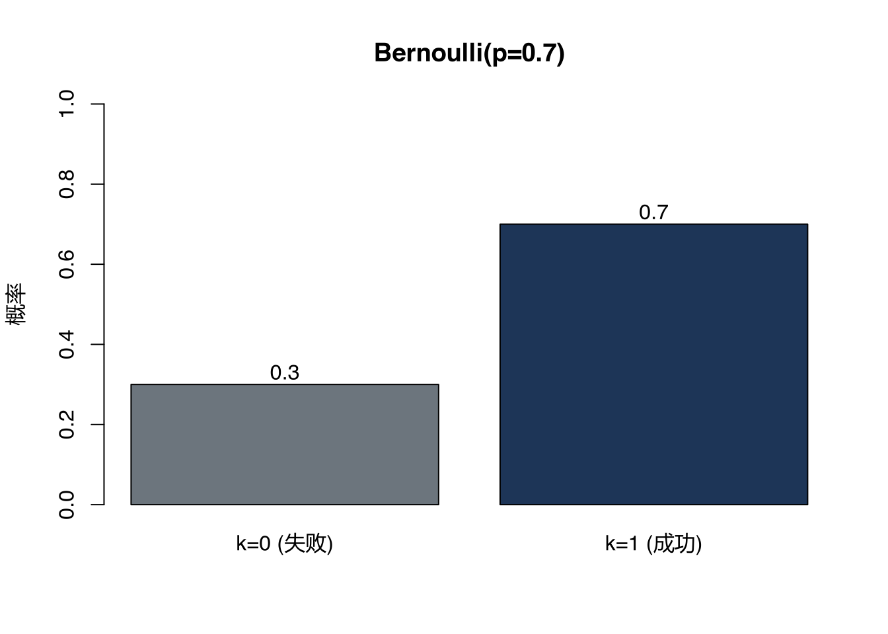
2.4.1.2 (2) 二项分布（binomial distribution）
在 \(n\) 次 Bernoulli 试验中（每次成功概率记为 \(p\)）成功次数 \(k\) 的分布（记为 \(B(n,p)\)，或 \(\text{Bin}(n,p)\)），其概率质量函数为
\[ f(k\mid n,p) = \binom{n}{k}p^k(1-p)^{n-k}, \quad k=0,1,2,\ldots,n \]
这里
\[ \binom{n}{k} = \frac{n!}{k!(n-k)!} \]
令 \(\boldsymbol{x}=(x_1,x_2,\ldots,x_n)\)，\(\boldsymbol{N}=(N_1,N_2,\ldots,N_n)\) 为观测值，则有：
- 参数 \(p\) 的先验分布：\(\text{Beta}(\alpha,\beta)\)
- 后验分布的超参数：\(\left(\alpha+\sum_{i=1}^n x_i,\ \ \beta+\sum_{i=1}^n N_i-\sum_{i=1}^n x_i\right)\)
Code
library(ggplot2)
library(patchwork)
make_binom_plot <- function(n, p, title) {
df <- data.frame(x = 0:n, prob = dbinom(0:n, n, p))
ggplot(df, aes(x = x, y = prob)) +
geom_col(fill = "#1D3557", width = 0.7) +
labs(title = title, x = "k", y = "P(X=k)") +
theme_minimal(base_size = 11)
}
p1 <- make_binom_plot(10, 0.2, "n=10, p=0.2 (左偏)")
p2 <- make_binom_plot(10, 0.5, "n=10, p=0.5 (对称)")
p3 <- make_binom_plot(10, 0.8, "n=10, p=0.8 (右偏)")
p4 <- make_binom_plot(50, 0.5, "n=50, p=0.5 (n增大,趋于正态)") +
geom_col(fill = "#B5432B", width = 0.7)
(p1 | p2) / (p3 | p4) # patchwork 的排版语法: | 左右拼, / 上下拼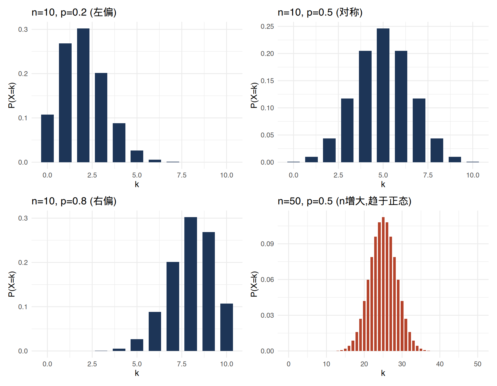
2.4.1.3 (3) 负二项分布（negative binomial distribution）
考虑一系列独立同分布伯努利试验（记成功概率为 \(p\)）。负二项式分布是在指定的（非随机）失败次数（记为 \(r\)）之前成功次数（记为 \(k\)）的离散概率分布（记为 \(\text{NB}(r,p)\)）。其概率质量函数为：
\[ f(k\mid r,p) = \binom{k+r-1}{k}p^k(1-p)^r, \quad k=0,1,2,\ldots \]
假定 \(r\) 已知，令 \(\boldsymbol{x}=(x_1,x_2,\ldots,x_n)\) 为观测值，则有：
- 参数 \(p\) 的先验分布：\(\text{Beta}(\alpha,\beta)\)
- 后验分布的超参数：\(\left(\alpha+\sum_{i=1}^n x_i,\ \ \beta+rn\right)\)
Code
library(ggplot2)
library(patchwork)
make_negbinom_plot <- function(r, p, title, kmax = 30) {
df <- data.frame(x = 0:kmax, prob = dnbinom(0:kmax, size = r, prob = p))
ggplot(df, aes(x = x, y = prob)) +
geom_col(fill = "#1D3557", width = 0.7) +
labs(title = title, x = "k", y = "P(X=k)") +
theme_minimal(base_size = 11)
}
p1 <- make_negbinom_plot(3, 0.5, "r=3, p=0.5")
p2 <- make_negbinom_plot(3, 0.3, "r=3, p=0.3 (p变小,拖尾更长)")
p3 <- make_negbinom_plot(10, 0.5, "r=10, p=0.5 (r变大,整体右移)")
p4 <- make_negbinom_plot(10, 0.3, "r=10, p=0.3") +
geom_col(fill = "#B5432B", width = 0.7)
(p1 | p2) / (p3 | p4)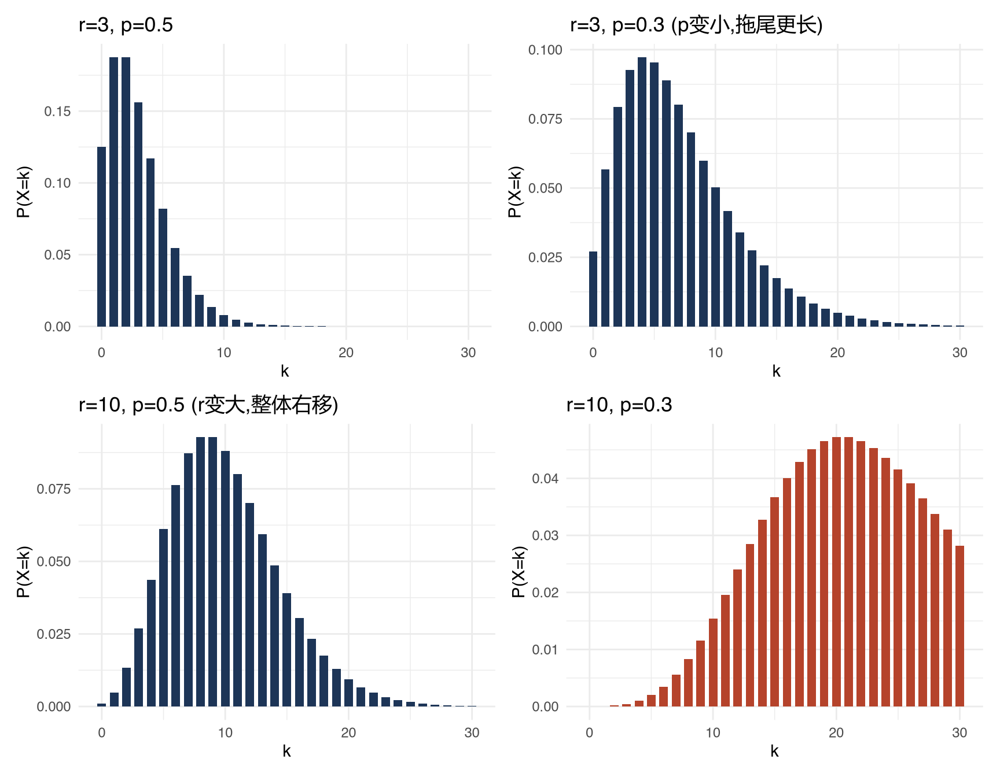
但要注意 R 官方文档对 prob 参数的定义，和你截图这本书对 p 的定义，成功/失败的角色可能是反的
2.4.1.4 (4) Poisson 分布（Poisson distribution）
假定事件以已知的恒定速率发生并且独立于自上次事件以来的时间，Poisson 分布表示给定数量的事件发生在固定的时间间隔或空间中的概率，其均值和方差相等（记为 \(\Lambda\)），记为 \(P(\Lambda)\)。其概率质量函数为
\[ p(k\mid\Lambda) = e^{-\Lambda}\frac{\Lambda^k}{k!}, \quad k=0,1,2,\ldots \]
令 \(\boldsymbol{x}=(x_1,x_2,\ldots,x_n)\) 为观测值，则有：
参数 \(\Lambda\) 的先验分布：\(\text{Gamma}(\alpha,\beta)\) 或 \(\text{Gamma}(\kappa,\theta)\)
后验分布的超参数：
对于先验分布 \(\text{Gamma}(\alpha,\beta)\)： \[ \left(\alpha+\sum_{i=1}^n x_i,\ \ \beta+n\right) \]
对于先验分布 \(\text{Gamma}(\kappa,\theta)\)： \[ \left(\kappa+\sum_{i=1}^n x_i,\ \ \frac{\theta}{n\theta+1}\right) \]
Code
library(ggplot2)
library(patchwork)
make_pois_plot <- function(lambda, title, kmax) {
df <- data.frame(x = 0:kmax, prob = dpois(0:kmax, lambda = lambda))
ggplot(df, aes(x = x, y = prob)) +
geom_col(fill = "#1D3557", width = 0.7) +
labs(title = title, x = "k", y = "P(X=k)") +
theme_minimal(base_size = 11)
}
p1 <- make_pois_plot(1, "Λ=1 (强右偏)", kmax = 10)
p2 <- make_pois_plot(3, "Λ=3", kmax = 15)
p3 <- make_pois_plot(10, "Λ=10 (趋于对称)", kmax = 25)
p4 <- make_pois_plot(30, "Λ=30 (接近正态)", kmax = 60) +
geom_col(fill = "#B5432B", width = 0.7)
(p1 | p2) / (p3 | p4)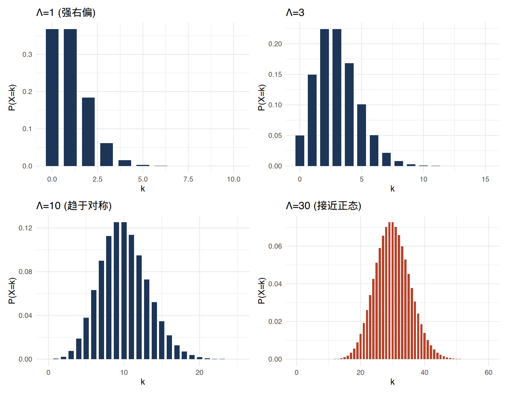
2.4.1.5 (5) 分类分布（categorical distribution）
也被称为广义 Bernoulli 分布（generalized Bernoulli distribution）。描述了一个随机变量的可能结果，该随机变量可以采用若干（记为 \(k\)）可能类别中的一个，并且每个类别有指定的概率，记为
\[ \boldsymbol{p} = (p_1,p_2,\ldots,p_k), \quad \sum_{i=1}^k p_i = 1 \]
其概率质量函数为
\[ f(x=i\mid \boldsymbol{p}) = p_i \quad \text{或} \quad f(x\mid\boldsymbol{p}) = \prod_{i=1}^k p_i^{[x=i]} \]
这里
\[ [x=i] = \begin{cases} 1, & x=i; \\ 0, & x\neq i. \end{cases} \]
令 \(\boldsymbol{c}=(c_1,c_2,\ldots,c_k)\)，这里 \(c_i\) 为属于第 \(i\) 类观测值的个数，则：
- 参数 \(\boldsymbol{p}\) 的先验分布：\(\text{Dirichlet}(\boldsymbol{\alpha})\)，\(\boldsymbol{\alpha}=(\alpha_1,\alpha_2,\ldots,\alpha_k)\)
- 后验分布的超参数：\(\boldsymbol{\alpha}+\boldsymbol{c}\)，或 \(\{\alpha_i+c_i\}_{i=1}^k\)
Code
library(ggplot2)
library(patchwork)
# base R 没有内置 rdirichlet，用 rgamma 手写（标准做法，不依赖额外包）
rdirichlet_manual <- function(n, alpha) {
k <- length(alpha)
samples <- matrix(rgamma(n * k, shape = alpha, rate = 1), ncol = k, byrow = TRUE)
samples / rowSums(samples)
}
make_dirichlet_plot <- function(alpha, title, seed = 1) {
set.seed(seed)
p <- rdirichlet_manual(1, alpha)
df <- data.frame(category = factor(seq_along(alpha)), prob = as.vector(p))
ggplot(df, aes(x = category, y = prob)) +
geom_col(fill = "#1D3557", width = 0.6) +
ylim(0, 1) +
labs(title = title, x = "类别 i", y = expression(p[i])) +
theme_minimal(base_size = 11)
}
p1 <- make_dirichlet_plot(c(1,1,1), "α=(1,1,1) 无信息先验")
p2 <- make_dirichlet_plot(c(10,10,10), "α=(10,10,10) 强先验,趋于均匀")
p3 <- make_dirichlet_plot(c(5,2,1), "α=(5,2,1) 不对称先验")
p4 <- make_dirichlet_plot(c(0.3,0.3,0.3), "α=(0.3,0.3,0.3) 稀疏先验") +
geom_col(fill = "#B5432B", width = 0.6)
(p1 | p2) / (p3 | p4)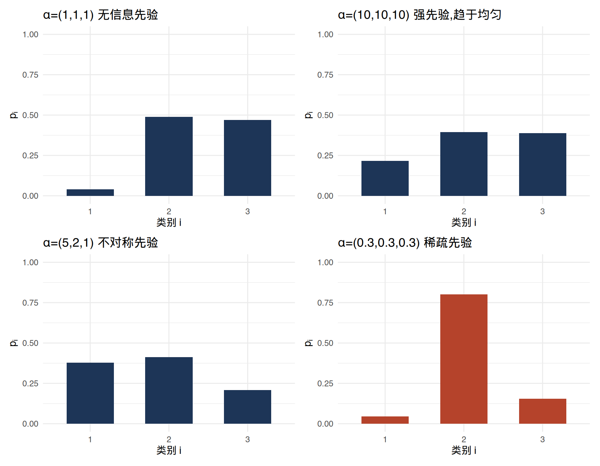
2.4.1.6 (6) 多项分布（multinomial distribution）
它是二项分布所基于的 Bernoulli 试验从两个结果到多个（记为 \(k\) 个）结果的推广，每个结果的概率固定，记为
\[ \boldsymbol{p} = (p_1,p_2,\ldots,p_k), \quad \sum_{i=1}^k p_i = 1 \]
多项分布描述了在固定试验次数（记为 \(n\)）中，得到各类次数
\[ \boldsymbol{x} = (x_1,x_2,\ldots,x_k), \quad \sum_{i=1}^k x_i = n \]
的概率 \(\text{Multi}(n,\boldsymbol{p})\)。其概率质量函数为
\[ f(x_1,x_2,\ldots,x_k\mid n,p_1,p_2,\ldots,p_k) = \frac{n!}{x_1!\,x_2!\,\cdots\,x_k!}\,p_1^{x_1}\times p_2^{x_2}\times\cdots\times p_k^{x_k} \]
记观测值为 \(\boldsymbol{x}=(x_1,x_2,\ldots,x_k)\)，则有：
- 参数 \(\boldsymbol{p}\) 的先验分布：\(\text{Dirichlet}(\boldsymbol{\alpha})\)，\(\boldsymbol{\alpha}=(\alpha_1,\alpha_2,\ldots,\alpha_k)\)
- 后验分布的超参数：\(\boldsymbol{\alpha}+\boldsymbol{x} = (\alpha_1+x_1,\ \alpha_2+x_2,\ \ldots,\ \alpha_k+x_k)\)
Code
library(ggplot2)
library(patchwork)
make_multi_plot <- function(n, p, title, seed = 1) {
set.seed(seed)
x <- as.vector(rmultinom(1, size = n, prob = p))
df <- data.frame(category = factor(seq_along(p)), count = x)
ggplot(df, aes(x = category, y = count)) +
geom_col(fill = "#1D3557", width = 0.6) +
labs(title = title, x = "类别 i", y = expression(x[i])) +
theme_minimal(base_size = 11)
}
p1 <- make_multi_plot(100, c(1/3,1/3,1/3), "n=100, p均匀(1/3,1/3,1/3)")
p2 <- make_multi_plot(100, c(0.6,0.3,0.1), "n=100, p不均匀(0.6,0.3,0.1)")
p3 <- make_multi_plot(20, c(1/3,1/3,1/3), "n=20 (样本量小,波动更大)")
p4 <- make_multi_plot(100, c(0.6,0.3,0.1), "n=100, 换个随机种子(抽样波动)", seed = 7) +
geom_col(fill = "#B5432B", width = 0.6)
(p1 | p2) / (p3 | p4)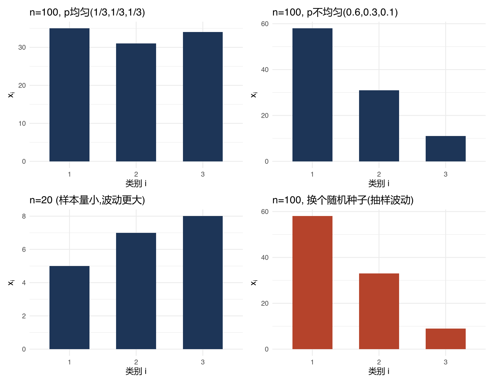
2.4.1.7 (7) 超几何分布（hypergeometric distribution）
考虑有刚好 \(N\) 个对象，其中有 \(K\) 个具有某种特征，超几何分布描述在 \(n\) 次不放回的抽取中，刚好抽到 \(k\) 个具有该特征对象的概率。其概率质量函数为
\[ p(k\mid N,K,n) = \frac{\binom{K}{k}\binom{N-K}{n-k}}{\binom{N}{n}} \]
假定 \(\boldsymbol{N}=(N_1,N_2,\ldots,N_n)\) 已知，记观测值为 \(\boldsymbol{x}=(x_1,x_2,\ldots,x_n)\)，则：
- 参数 \(K\) 的先验分布：\(\text{Beta-binomial}(\boldsymbol{N},\alpha,\beta)\)，这里已知的 \(\boldsymbol{N}\) 不会在后验超参数中更新
- 后验分布的超参数：\(\left(\alpha+\sum_{i=1}^n x_i,\ \ \beta+\sum_{i=1}^n N_i-\sum_{i=1}^n x_i\right)\)
Code
library(ggplot2)
library(patchwork)
# 注意 R 的 dhyper(x, m, n, k) 参数名和书中记号不同:
# m = K (总体中具有特征的个数), n = N-K (不具有特征的个数), k = 抽取次数(书中的n)
make_compare_plot <- function(N, K, ndraw, title) {
x <- 0:ndraw
df <- data.frame(
x = rep(x, 2),
prob = c(dhyper(x, m = K, n = N - K, k = ndraw),
dbinom(x, size = ndraw, prob = K / N)),
分布 = rep(c("超几何(不放回)", "二项(有放回近似)"), each = length(x))
)
ggplot(df, aes(x = x, y = prob, fill = 分布)) +
geom_col(position = "dodge", width = 0.7) +
scale_fill_manual(values = c("#1D3557", "#B5432B")) +
labs(title = title, x = "k", y = "P(X=k)") +
theme_minimal(base_size = 10) +
theme(legend.position = "bottom")
}
p1 <- make_compare_plot(N = 20, K = 7, ndraw = 5, "N=20 (总体小,两者差异明显)")
p2 <- make_compare_plot(N = 50, K = 17.5, ndraw = 5, "N=50")Warning in dhyper(x, m = K, n = N - K, k = ndraw): NaNs producedCode
p3 <- make_compare_plot(N = 200, K = 70, ndraw = 5, "N=200")
p4 <- make_compare_plot(N = 2000, K = 700, ndraw = 5, "N=2000 (N远大于n,两者几乎重合)")
(p1 | p2) / (p3 | p4)Warning: Removed 6 rows containing missing values or values outside the scale range
(`geom_col()`).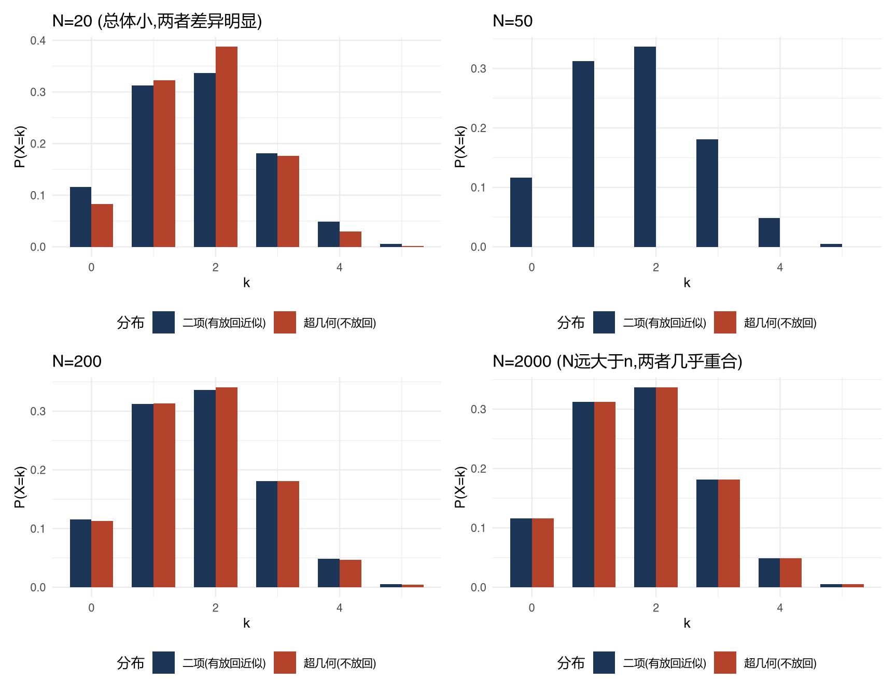
2.4.1.8 (8) 几何分布（geometric distribution）
是研究在 Bernoulli 试验中得到一个成功（记每次成功的概率为 \(p\)）时所需要的试验次数的分布（记为 \(k\)）。其概率质量函数为：
\[ f(k\mid p) = (1-p)^{k-1}p, \quad k=1,2,\ldots \]
记观测值为 \(\boldsymbol{x}=(x_1,x_2,\ldots,x_n)\)，则有：
- 参数 \(p\) 的先验分布：\(\text{Beta}(\alpha,\beta)\)
- 后验分布的超参数：\(\left(\alpha+n,\ \ \beta+\sum_{i=1}^n x_i-n\right)\)
Code
library(ggplot2)
library(patchwork)
# 注意: R的dgeom(x,prob)中x是"失败次数"(0,1,2,...)
# 书中的k是"总试验次数"(1,2,3,...), 换算关系: 书中k = R的x + 1
make_geom_plot <- function(p, title, kmax) {
k <- 1:kmax # 书中的 k(总试验次数)
probs <- dgeom(k - 1, prob = p) # 转换成 R 的 x = k - 1(失败次数)再调用
df <- data.frame(k = k, prob = probs)
ggplot(df, aes(x = k, y = prob)) +
geom_col(fill = "#1D3557", width = 0.7) +
labs(title = title, x = "k (总试验次数)", y = "P(K=k)") +
theme_minimal(base_size = 11)
}
p1 <- make_geom_plot(0.7, "p=0.7 (成功率高,很快结束)", kmax = 10)
p2 <- make_geom_plot(0.5, "p=0.5", kmax = 15)
p3 <- make_geom_plot(0.3, "p=0.3", kmax = 20)
p4 <- make_geom_plot(0.1, "p=0.1 (成功率低,长尾拖延)", kmax = 40) +
geom_col(fill = "#B5432B", width = 0.7)
(p1 | p2) / (p3 | p4)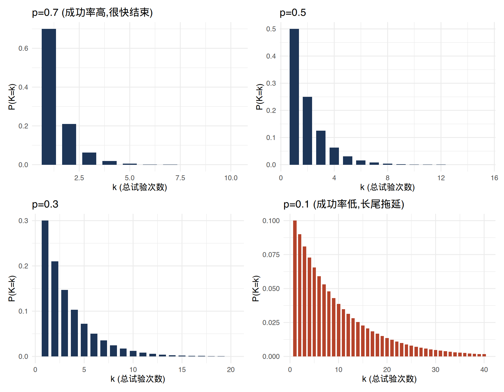
2.4.1.9 (9) 正态分布（normal distribution）或高斯分布（Gaussian distribution）
有均值 \(\mu\) 和方差 \(\Sigma^2\) 的正态分布（记为 \(N(\mu,\Sigma^2)\) 或 \(\text{Gaussian}(\mu,\Sigma^2)\)）可由下面概率密度函数定义：
\[ f(x\mid\mu,\Sigma^2) = \frac{1}{\sqrt{2\pi\Sigma^2}}\exp\left[-\frac{1}{2\Sigma^2}(x-\mu)^2\right] \]
如果把方差的倒数作为参数精度：\(\tau \equiv 1/\Sigma^2\)，记为 \(N(\mu,\tau)\)，则概率密度函数为：
\[ f(x\mid\mu,\tau) = \sqrt{\frac{\tau}{2\pi}}\exp\left[-\frac{\tau}{2}(x-\mu)^2\right] \]
记观测值为 \(\boldsymbol{x}=(x_1,x_2,\ldots,x_n)\)，考虑下面几种情况：
(a) \(N(\mu,\Sigma^2)\)，方差 \(\Sigma^2\) 已知：
- 参数 \(\mu\) 的先验分布：\(N(\mu_0,\Sigma_0^2)\)
- 后验分布的超参数： \[ \left[\frac{1}{\frac{1}{\Sigma_0^2}+\frac{n}{\Sigma^2}}\left(\frac{\mu_0}{\Sigma_0^2}+\frac{\sum_{i=1}^n x_i}{\Sigma^2}\right),\ \ \left(\frac{1}{\Sigma_0^2}+\frac{n}{\Sigma^2}\right)^{-1}\right] \]
(b) \(N(\mu,\tau)\)，精度 \(\tau\) 已知：
- 参数 \(\mu\) 的先验分布：\(N(\mu_0,\tau_0)\)
- 后验分布的超参数： \[ \left(\frac{\tau_0\mu_0+\tau\sum_{i=1}^n x_i}{\tau_0+n\tau},\ \ \tau_0+n\tau\right) \]
(c) \(N(\mu,\Sigma^2)\)，均值 \(\mu\) 已知，情况一：
- 参数 \(\Sigma^2\) 的先验分布：逆 Gamma 分布 \(\text{Inv-Gamma}(\alpha,\beta)\)
- 后验分布的超参数： \[ \left[\alpha+\frac{n}{2},\ \ \beta+\frac{1}{2}\sum_{i=1}^n(x_i-\mu)^2\right] \]
(d) \(N(\mu,\Sigma^2)\)，均值 \(\mu\) 已知，情况二：
- 参数 \(\Sigma^2\) 的先验分布：缩放逆 \(\chi^2\) 分布 \(\text{Scale-inv-}\chi^2(\nu,\Sigma_0^2)\)
- 后验分布的超参数： \[ \left[\nu+n,\ \ \frac{\nu\Sigma_0^2+\sum_{i=1}^n(x_i-\mu)^2}{\nu+n}\right] \]
(e) \(N(\mu,\tau)\)，均值 \(\mu\) 已知：
- 参数 \(\tau\) 的先验分布：\(\text{Gamma}(\alpha,\beta)\)
- 后验分布的超参数： \[ \left[\alpha+\frac{n}{2},\ \ \beta+\frac{1}{2}\sum_{i=1}^n(x_i-\mu)^2\right] \]
(f) \(N(\mu,\Sigma^2)\)，\(\mu\) 和 \(\Sigma^2\) 均未知（可交换）：
- 参数 \((\mu,\Sigma^2)\) 的先验分布：正态-逆 Gamma 分布 \(\text{Normal-Inv-Gamma}(\mu_0,\nu,\alpha,\beta)\)
- 后验分布的超参数： \[ \left[\frac{\nu\mu_0+n\bar{x}}{\nu+n},\ \ \nu+n,\ \ \alpha+\frac{n}{2},\ \ \beta+\frac{1}{2}\sum_{i=1}^n(x_i-\bar{x})^2+\frac{n\nu}{\nu+n}\frac{(\bar{x}-\mu_0)^2}{2}\right] \]
(g) \(N(\mu,\tau)\)，\(\mu\) 和 \(\tau\) 均未知（可交换）：
- 参数 \((\mu,\tau)\) 的先验分布：正态 Gamma 分布 \(\text{Normal-Gamma}(\mu_0,\nu,\alpha,\beta)\)
- 后验分布的超参数： \[ \left[\frac{\nu\mu_0+n\bar{x}}{\nu+n},\ \ \nu+n,\ \ \alpha+\frac{n}{2},\ \ \beta+\frac{1}{2}\sum_{i=1}^n(x_i-\bar{x})^2+\frac{n\nu}{\nu+n}\frac{(\bar{x}-\mu_0)^2}{2}\right] \]
Code
library(ggplot2)
library(patchwork)
set.seed(1)
true_mu <- 5
sigma_sq <- 4 # 已知的观测方差
mu0 <- 0; sigma0_sq <- 100 # 先验很弱(方差大=不确定)
x_all <- rnorm(50, mean = true_mu, sd = sqrt(sigma_sq))
make_posterior_plot <- function(n, title) {
if (n == 0) {
post_mean <- mu0; post_var <- sigma0_sq
} else {
x <- x_all[1:n]
post_var <- 1 / (1/sigma0_sq + n/sigma_sq)
post_mean <- post_var * (mu0/sigma0_sq + sum(x)/sigma_sq)
}
grid <- seq(-10, 15, length.out = 300)
df <- data.frame(mu = grid, density = dnorm(grid, post_mean, sqrt(post_var)))
ggplot(df, aes(x = mu, y = density)) +
geom_line(color = "#1D3557", linewidth = 1) +
geom_vline(xintercept = true_mu, linetype = "dashed", color = "#B5432B") +
labs(title = title, x = expression(mu), y = "后验密度") +
theme_minimal(base_size = 11)
}
p1 <- make_posterior_plot(0, "n=0 (只有先验,很平坦)")
p2 <- make_posterior_plot(3, "n=3 (少量数据,开始收缩)")
p3 <- make_posterior_plot(10, "n=10 (更集中,更靠近真值)")
p4 <- make_posterior_plot(50, "n=50 (高度集中于真值附近)")
(p1 | p2) / (p3 | p4)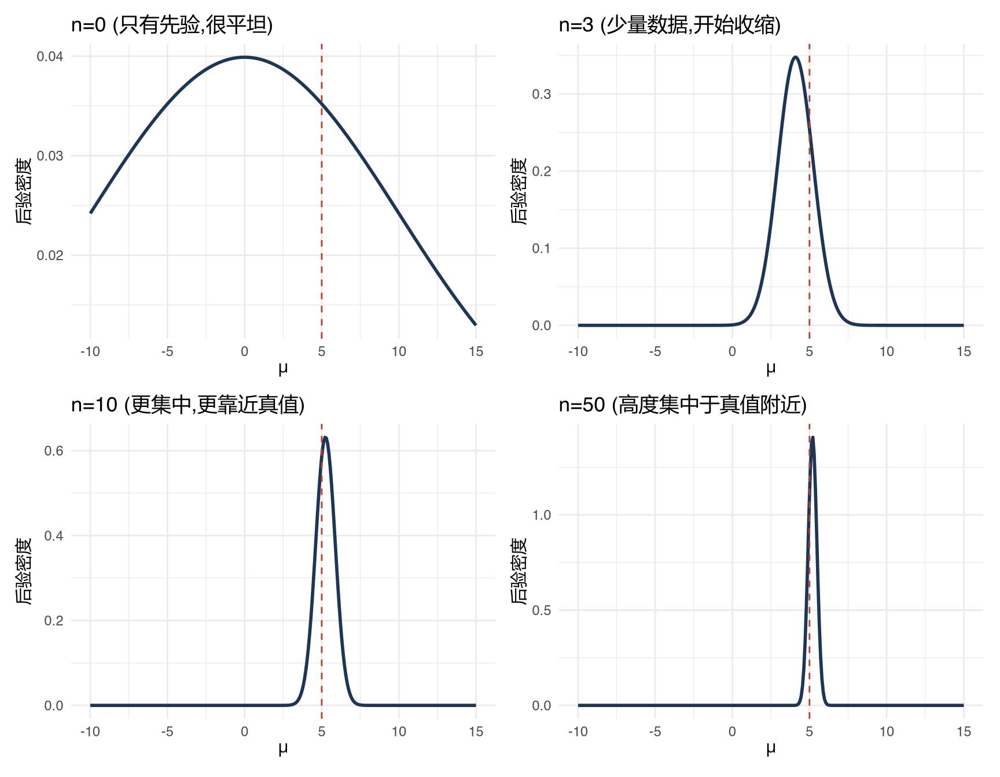
帮你梳理一下这一大块内容的组织逻辑：这7种情况本质上是同一件事——正态分布有两个参数（均值 \(\mu\)、方差/精度 \(\Sigma^2/\tau\)），根据”谁已知、谁未知”排列组合出不同的共轭先验搭配：
| 情况 | 已知 | 未知 | 共轭先验 |
|---|---|---|---|
| (a)(b) | 方差/精度 | 均值 \(\mu\) | 正态 |
| (c)(d)(e) | 均值 | 方差/精度 | 逆Gamma / 缩放逆\(\chi^2\) / Gamma |
| (f)(g) | 都不知道 | \(\mu\) 和 方差/精度 | 正态-逆Gamma / 正态-Gamma（联合先验） |
2.4.1.10 (10) Gamma 分布（gamma distribution）
该分布有两种形式。一种（记为 \(\text{Gamma}(\alpha,\beta)\)，\(\alpha>0\) 称为形状参数，\(\beta>0\) 称为速率（rate）参数）的概率密度函数为
\[ \frac{\beta^\alpha}{\Gamma(\alpha)}x^{\alpha-1}e^{-\beta x}, \quad x\in(0,\infty) \]
这里的 \(\Gamma(\alpha)\) 为 Gamma 函数；而另一种把上述参数重置为形状参数 \(k=\alpha\) 及尺度参数 \(\theta=1/\beta\)，记为 \(\text{Gamma}(k,\theta)\)，其概率密度函数为：
\[ \frac{1}{\Gamma(k)\theta^k}x^{k-1}e^{-\frac{x}{\theta}}, \quad x\in(0,\infty) \]
记观测值为 \(\boldsymbol{x}=(x_1,x_2,\ldots,x_n)\)，考虑下面几种情况：
(a) \(\alpha\) 已知：
- 参数 \(\beta\) 的先验分布：\(\text{Gamma}(\alpha_0,\beta_0)\)
- 后验分布的超参数：\(\left(\alpha_0+n\alpha,\ \ \beta_0+\sum_{i=1}^n x_i\right)\)
(b) \(\beta\) 已知：
- 参数 \(\alpha\) 的先验分布：\(\propto \dfrac{a^{\alpha-1}\beta^{\alpha c}}{\Gamma(\alpha)^b}\)，有 3 个超参数：\((a,b,c)\)
- 后验分布的超参数：\(\left(a\prod_{i=1}^n x_i,\ \ b+n,\ \ c+n\right)\)
(c) \(\alpha,\beta\) 均未知，\(\beta\) 是逆尺度：
- 参数 \((\alpha,\beta)\) 的先验分布：\(\propto \dfrac{p^{\alpha-1}e^{-\beta q}}{\Gamma(\alpha)^r\beta^{-\alpha s}}\)，有 4 个超参数：\((p,q,r,s)\)
- 后验分布的超参数：\(\left(p\prod_{i=1}^n x_i,\ \ q+\sum_{i=1}^n x_i,\ \ r+n,\ \ s+n\right)\)
Code
library(ggplot2)
library(patchwork)
make_gamma_plot <- function(alpha, beta, title, xmax) {
x <- seq(0.001, xmax, length.out = 300)
df <- data.frame(x = x, density = dgamma(x, shape = alpha, rate = beta))
ggplot(df, aes(x = x, y = density)) +
geom_area(fill = "#1D3557", alpha = 0.7) +
geom_line(color = "#1D3557", linewidth = 0.8) +
labs(title = title, x = "x", y = "f(x)") +
theme_minimal(base_size = 11)
}
p1 <- make_gamma_plot(1, 1, "α=1, β=1 (退化为指数分布)", xmax = 6)
p2 <- make_gamma_plot(2, 1, "α=2, β=1 (开始出现峰形)", xmax = 8)
p3 <- make_gamma_plot(5, 1, "α=5, β=1 (更对称,类似正态)", xmax = 15)
p4 <- make_gamma_plot(5, 2, "α=5, β=2 (β增大,整体左移变窄)", xmax = 10) +
geom_area(fill = "#B5432B", alpha = 0.7) + geom_line(color = "#B5432B", linewidth = 0.8)
(p1 | p2) / (p3 | p4)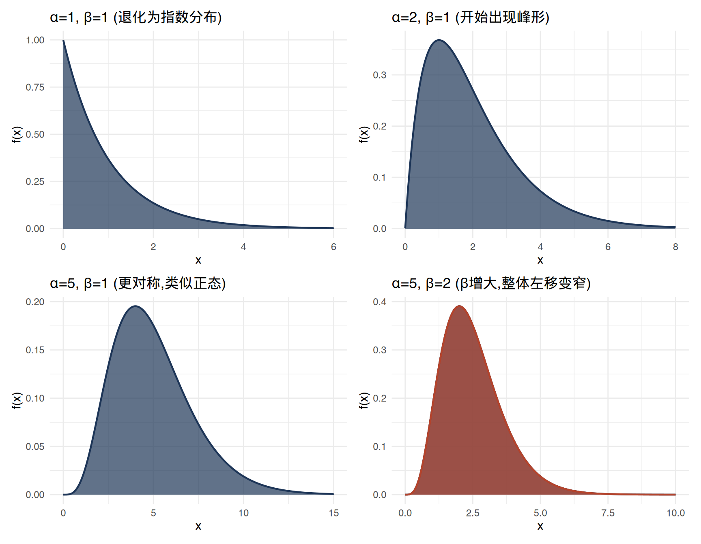
2.4.1.11 (11) 指数分布（exponential distribution）
当 \(\text{Gamma}(k,\theta)\) 的参数 \(k=1,\theta=1/\Lambda\) 时，就是指数分布，概率密度函数为
\[ f(x\mid\Lambda) = \Lambda e^{-\Lambda x}, \quad x\in[0,\infty) \]
记观测值为 \(\boldsymbol{x}=(x_1,x_2,\ldots,x_n)\)，则有：
- 参数 \(\Lambda\) 的先验分布：\(\text{Gamma}(\alpha,\beta)\)
- 后验分布的超参数：\(\left(\alpha+n,\ \ \beta+\sum_{i=1}^n x_i\right)\)
Code
library(ggplot2)
library(patchwork)
make_exp_plot <- function(lambda, title, xmax) {
x <- seq(0, xmax, length.out = 300)
df <- data.frame(x = x, density = dexp(x, rate = lambda))
ggplot(df, aes(x = x, y = density)) +
geom_area(fill = "#1D3557", alpha = 0.7) +
geom_line(color = "#1D3557", linewidth = 0.8) +
labs(title = title, x = "x", y = "f(x)") +
theme_minimal(base_size = 11)
}
p1 <- make_exp_plot(2, "Λ=2 (快速衰减)", xmax = 4)
p2 <- make_exp_plot(1, "Λ=1", xmax = 6)
p3 <- make_exp_plot(0.5, "Λ=0.5", xmax = 10)
p4 <- make_exp_plot(0.2, "Λ=0.2 (缓慢拖尾)", xmax = 20) +
geom_area(fill = "#B5432B", alpha = 0.7) + geom_line(color = "#B5432B", linewidth = 0.8)
(p1 | p2) / (p3 | p4)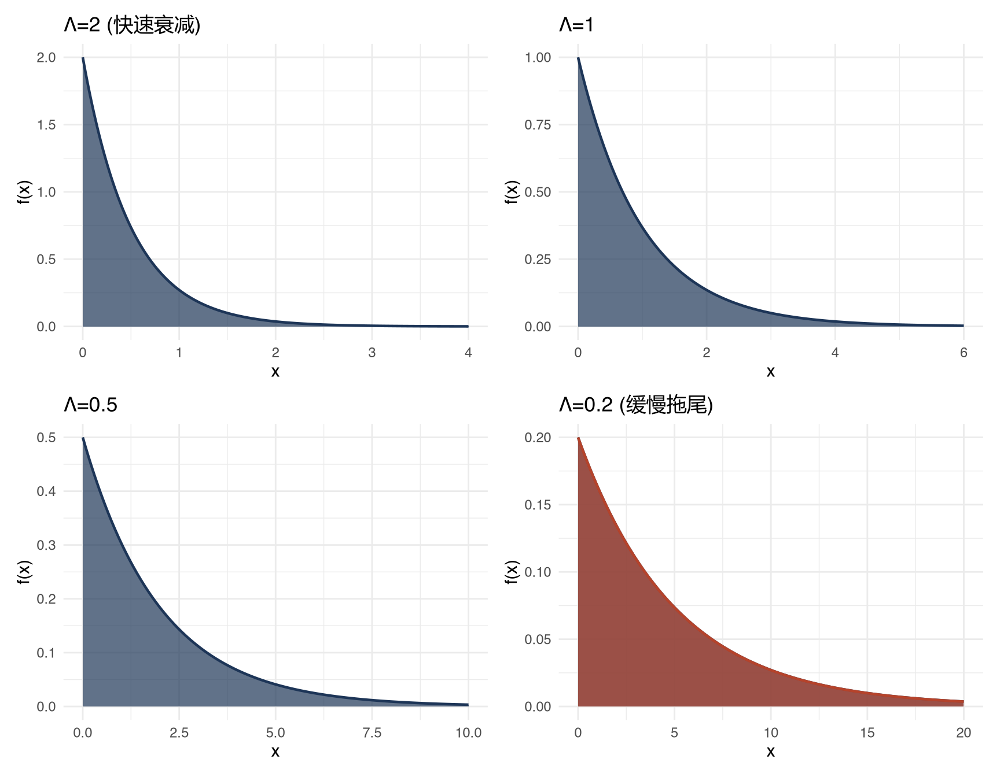
2.4.1.12 (12) 逆 Gamma 分布（inverse-gamma distribution）
如果当 \(Y\sim\text{Gamma}(\alpha,\beta)\)，则 \(X=1/Y\) 服从逆 Gamma 分布（记为 \(\text{Inv-Gamma}(\alpha,\beta)\)），其概率密度函数为：
\[ f(x\mid\alpha,\beta) = \frac{\beta^\alpha}{\Gamma(\alpha)}x^{-\alpha-1}\exp\left(-\frac{\beta}{x}\right) \]
记观测值为 \(\boldsymbol{x}=(x_1,x_2,\ldots,x_n)\)，假定 \(\alpha\) 已知，\(\beta\) 是逆尺度，则有：
- 参数 \(\beta\) 的先验分布：\(\text{Gamma}(\alpha_0,\beta_0)\)
- 后验分布的超参数： \[ \left(\alpha_0+n\alpha,\ \ \beta_0+\sum_{i=1}^n\frac{1}{x_i}\right) \]
Code
library(ggplot2)
library(patchwork)
# base R 没有内置 dinvgamma，手写(标准做法：Y~Gamma, X=1/Y 变换)
dinvgamma <- function(x, alpha, beta) {
beta^alpha / gamma(alpha) * x^(-alpha - 1) * exp(-beta / x)
}
make_invgamma_plot <- function(alpha, beta, title, xmax) {
x <- seq(0.01, xmax, length.out = 300)
df <- data.frame(x = x, density = dinvgamma(x, alpha, beta))
ggplot(df, aes(x = x, y = density)) +
geom_area(fill = "#1D3557", alpha = 0.7) +
geom_line(color = "#1D3557", linewidth = 0.8) +
labs(title = title, x = "x", y = "f(x)") +
theme_minimal(base_size = 11)
}
p1 <- make_invgamma_plot(2, 1, "α=2, β=1", xmax = 5)
p2 <- make_invgamma_plot(2, 3, "α=2, β=3 (β增大,整体右移)", xmax = 8)
p3 <- make_invgamma_plot(5, 3, "α=5, β=3 (α增大,峰更集中)", xmax = 5)
p4 <- make_invgamma_plot(1, 1, "α=1, β=1 (α小,重尾更明显)", xmax = 10) +
geom_area(fill = "#B5432B", alpha = 0.7) + geom_line(color = "#B5432B", linewidth = 0.8)
(p1 | p2) / (p3 | p4)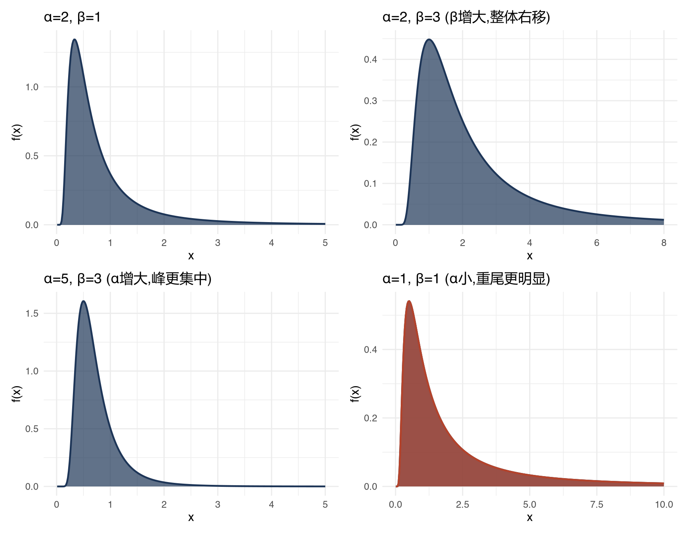
2.4.1.13 (13) Beta 分布（beta distribution）
如果 \(Y\sim\text{Gamma}(\alpha,\theta)\)，\(Z\sim\text{Gamma}(\beta,\theta)\)，则
\[ X = \frac{Y}{Y+Z} \]
服从参数为 \(\alpha>0,\beta>0\) 的 Beta 分布（记为 \(\text{Beta}(\alpha,\beta)\) 或 \(\text{B}(\alpha,\beta)\)），其概率密度函数为：
\[ f(x\mid\alpha,\beta) = \frac{\Gamma(\alpha+\beta)}{\Gamma(\alpha)\Gamma(\beta)}x^{\alpha-1}(1-x)^{\beta-1} = \frac{1}{\text{B}(\alpha,\beta)}x^{\alpha-1}(1-x)^{\beta-1} \]
Code
library(ggplot2)
library(patchwork)
make_beta_plot <- function(alpha, beta, title) {
x <- seq(0.001, 0.999, length.out = 300)
df <- data.frame(x = x, density = dbeta(x, alpha, beta))
ggplot(df, aes(x = x, y = density)) +
geom_area(fill = "#1D3557", alpha = 0.7) +
geom_line(color = "#1D3557", linewidth = 0.8) +
labs(title = title, x = "x", y = "f(x)") +
theme_minimal(base_size = 11)
}
p1 <- make_beta_plot(1, 1, "α=1, β=1 (退化为均匀分布)")
p2 <- make_beta_plot(2, 5, "α=2, β=5 (左偏,偏向小x)")
p3 <- make_beta_plot(5, 2, "α=5, β=2 (右偏,偏向大x)")
p4 <- make_beta_plot(0.5, 0.5, "α=0.5, β=0.5 (U形,两端极化)") +
geom_area(fill = "#B5432B", alpha = 0.7) + geom_line(color = "#B5432B", linewidth = 0.8)
(p1 | p2) / (p3 | p4)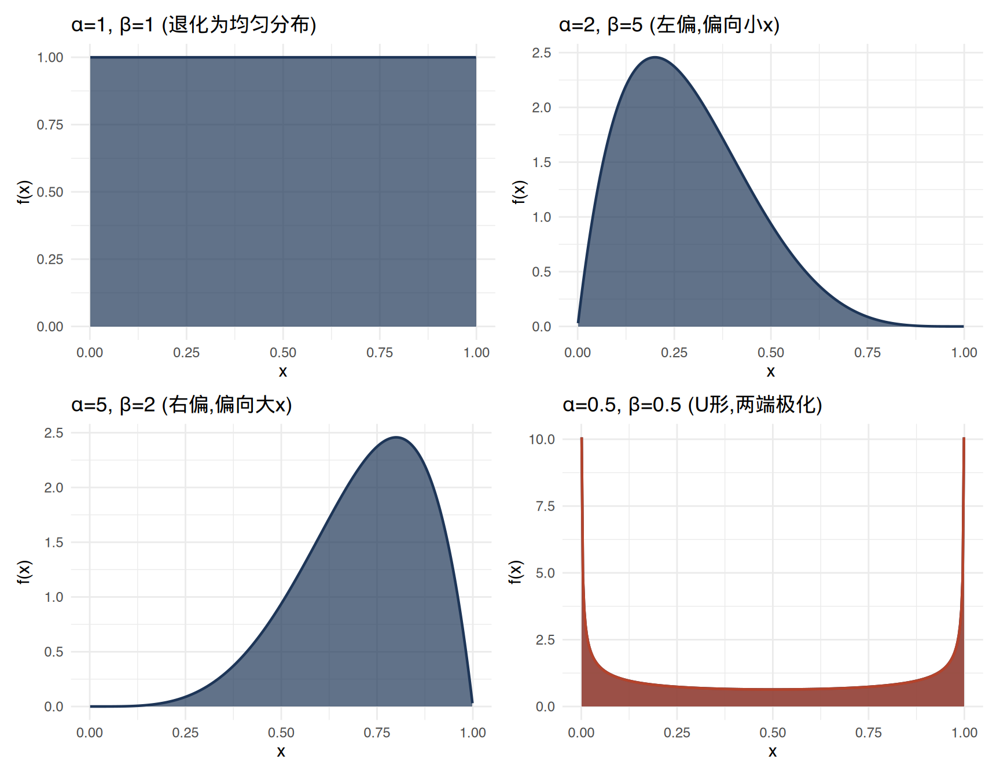
2.4.1.14 (14) Dirichlet 分布（Dirichlet distribution）
是 Beta 分布的多元推广。在 \(k\geq 2\) 并且有参数 \(\boldsymbol{\alpha}=(\alpha_1,\alpha_2,\ldots,\alpha_k)\)，\(\alpha_i>0,\ \forall i\)，则该分布有概率密度函数
\[ f(x_1,x_2,\ldots,x_k;\alpha_1,\alpha_2,\ldots,\alpha_k) = \frac{1}{\text{B}(\boldsymbol{\alpha})}\prod_{i=1}^k x_i^{\alpha_i-1} \]
这里
\[ \sum_{i=1}^k x_i = 1 \quad \text{而且} \quad x_i\geq 0,\ \forall i=1,2,\ldots,k \]
而 \(\text{B}(\boldsymbol{\alpha})\) 为多元 Beta 函数：
\[ \text{B}(\boldsymbol{\alpha}) = \frac{\prod_{i=1}^k\Gamma(\alpha_i)}{\Gamma\left(\sum_{i=1}^k\alpha_i\right)}, \qquad \boldsymbol{\alpha}=(\alpha_1,\alpha_2,\ldots,\alpha_k) \]
Code
library(ggplot2)
rdirichlet_manual <- function(n, alpha) {
k <- length(alpha)
samples <- matrix(rgamma(n * k, shape = alpha, rate = 1), ncol = k, byrow = TRUE)
samples / rowSums(samples)
}
set.seed(1)
alpha1 <- 3; alpha2 <- 5
samples <- rdirichlet_manual(50000, c(alpha1, alpha2))
df <- data.frame(x = samples[, 1])
ggplot(df, aes(x = x)) +
geom_histogram(aes(y = after_stat(density)), bins = 60,
fill = "#1D3557", alpha = 0.6) +
stat_function(fun = dbeta, args = list(shape1 = alpha1, shape2 = alpha2),
color = "#B5432B", linewidth = 1) +
labs(title = "Dirichlet(3,5) 第一分量的抽样直方图 vs Beta(3,5) 理论曲线",
x = "x", y = "密度") +
theme_minimal(base_size = 11)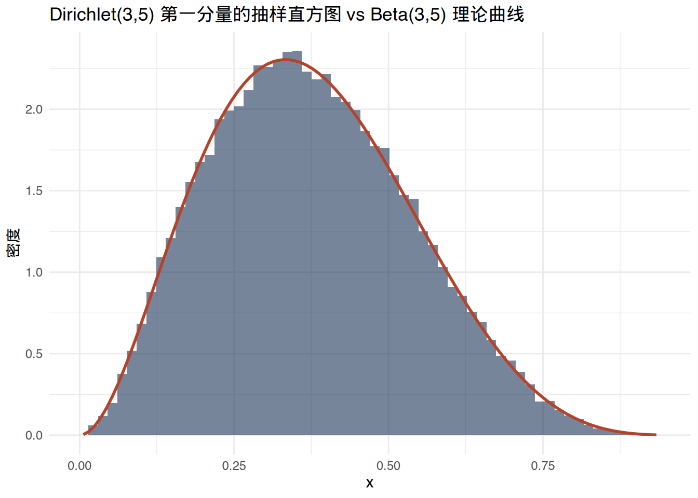
2.4.2 指数 先 验分布 族 的一些结果
2.5 Q1–Q5 速查
| 书中概念 | 我的框架对应 | |
|---|---|---|
| Q1 | 参数 \(\theta\) | 潜变量 |
| Q2 | 似然函数 \(L(\theta)=p(Y\mid\theta)\) | 观测模型（把 \(Y\) 固定看 \(\theta\)） |
| Q3 | 先验分布 \(p(\theta)\)、共轭先验族 | 先验结构 |
| Q4 | 后验分布 \(p(\theta\mid Y)\) | 计算目标 |
| Q5 | （书中较少展开） | 独立轴，需要自己补充阅读 |
待补充：共轭先验族那一节的具体推导笔记。